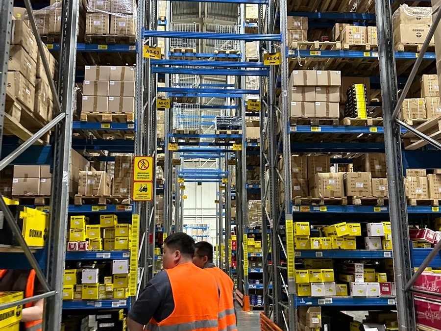

Business Delegation · Almaty / Astana
Auto-parts delegation to Kazakhstan
Background: More than ten auto-parts companies from eastern China wanted to assess real demand in Kazakhstan and Central Asia, but lacked local channels and did not know which institutions and distributors to approach.
What we did: Profiled each company's product line, target customers and capacity before the trip; designed a two-city itinerary across Almaty and Astana; arranged institutional visits and B2B matchmaking with Chinese–Russian interpreting; and compiled a follow-up list of projects and contacts.
Result: A concrete follow-up list after the trip, from which several companies started subsequent engagement and quotation processes.
10–15 companiesTwo-city itinerary3–5 daysB2G + B2B matchmaking